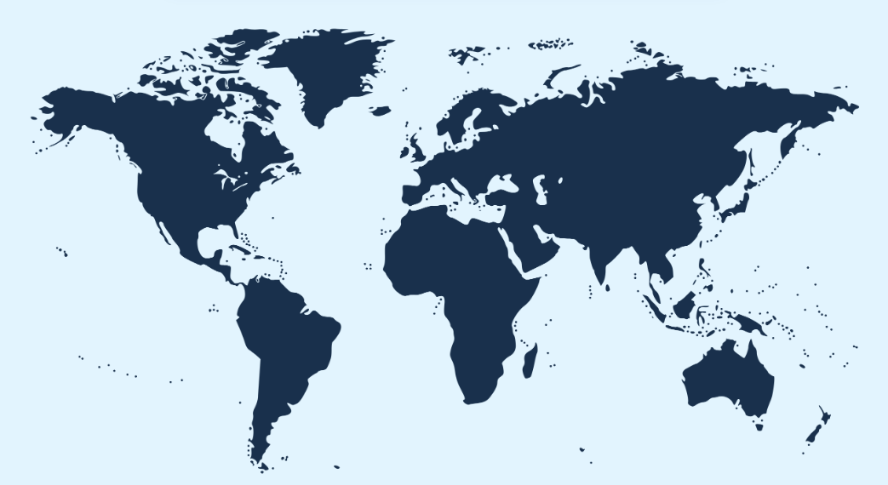

1. The Great Barrier Reef (Australia)
Key Features and Key Challenges
It is the largest living organism on the planet. A massive 2,300-kilometer-long structure, so gigantic that it is visible from space. It serves as a global benchmark for large-scale scientific observation. However, it faces successive marine heatwaves driven by global climate change, which trigger mass bleaching events that occur too frequently for the coral to recover.
Impacts and Solutions
This causes a colossal loss of marine biodiversity on an ocean scale and deals a heavy blow to the Australian tourism economy, which directly depends on the beauty of its seabed. In response to this emergency, researchers are deploying artificial intelligence and fleets of underwater drones (LarvalBot) to map the damage. This is also where Cloud Brightening is being tested : a technology that sprays salt water micro-droplets to whiten clouds and create shade over the water.
2. Tubbataha Reefs (Philippines)
Key Features and Key Challenges
This is one of the very few models of hope and total resilience on the planet. A site proving that an entirely devastated ecosystem can come back to life if humans step away radically. Historically, this paradise was destroyed by intensive blast and cyanide fishing during the 1980s. Today, the major challenge remains maintaining absolute security against poaching.
Impacts and Solutions
The site generates an ultra-positive economic impact through the "Spillover" effect: fish reproduce so successfully inside this forbidden area that populations naturally "overflow" outside, sustainably enriching the artisanal fishing grounds of the surrounding Philippine communities. The solution has been a complete militarization of the site. Listed as a UNESCO World Heritage site, these 100,000 hectares of marine park are guarded 24/7 by armed rangers from the Philippine Navy who live on an isolated structure in the middle of the ocean.
3. The Red Sea Reefs (Egypt)
Key Features and Key Challenges
The refuge of the "Super-Corals." This reef possesses a unique genetic signature inherited from the last ice age, allowing its species to tolerate temperatures that would be fatal to any other coral on the globe. However, its main challenges remain local: massive overtourism along the Egyptian coastlines, pollution from hotel infrastructure, and physical damage caused by divers and boat anchors.
Impacts and Solutions
This location could serve as the Noah's Ark of the oceans. If corals die out elsewhere, the Red Sea will hold the ultimate genetic keys to the survival of these ecosystems. International laboratories (including EPFL in Switzerland) are currently mapping the DNA of these specimens. The goal is to practice assisted evolution: utilizing these ultra-resilient strains to crossbreed and eventually repopulate devastated areas across the Indian Ocean or the Caribbean.
4. Belize Barrier Reef (Caribbean)
Key Features and Key Challenges
It is the second-largest reef system on the planet (home to the famous Great Blue Hole). Unlike others, its current fragility is directly linked to the immediate physical and chemical impact of nearby human activities: unregulated mass tourism, coastal development and concrete construction on beaches for resorts, and chemical pollution in swimming areas.
Impacts and Solutions
Dramatic coastal erosion is being observed (beaches are collapsing under waves because the damaged reef no longer acts as a shield), directly threatening the country's economy, as its GDP heavily relies on marine tourism. To address this, the government has banned chemical sunscreens and installed mandatory mooring buoys to ban anchors. Additionally, local fishermen are now being paid to become "gardeners of the sea" by managing coral nurseries.
5. Okinawa Reefs (Japan)
Key Features and Key Challenges
It is the mirror of our industrial activity. Located near the coast of a major economic power, this reef bears the full brunt of direct chemical changes in seawater due to ocean acidification. By absorbing the excess CO2 released into the atmosphere by terrestrial industries, the water turns acidic and dissolves the calcium carbonate necessary for coral survival.
Impacts and Solutions
This triggers a true "marine osteoporosis." The coral skeleton becomes porous and brittle like glass, leading to the physical collapse of the habitat for thousands of rockfish species. In response, Japanese companies are developing cutting-edge technologies: they 3D-print artificial reefs using ceramics or specific eco-friendly materials capable of locally neutralizing water acidity and forcing coral larvae to attach.
6. Chagos Archipelago (Indian Ocean)
Key Features and Key Challenges
The pristine laboratory of the Earth. This ultra-isolated archipelago has no inhabitants, no local industry, no agricultural fertilizers, and no plastic. It is the absolute reference baseline for scientists. Yet, global thermal shock proves that the absence of local pollution does not protect against global climate disruption: when the atmosphere overheats, the water overheats everywhere.
Impacts and Solutions
This serves as irrefutable legal evidence used before the UN: even if an area is perfectly managed locally, it remains a victim of the global carbon pollution of other nations. There is no technological miracle on-site, but Chagos delivers an essential lesson: freed from any direct human aggression, its immune system is excellent, and the reef heals twice as fast as others as soon as temperatures drop.